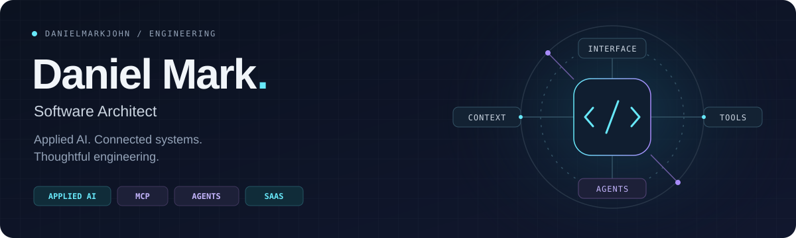

Software Architect · Applied AI · SaaS Platforms
Building useful AI into software that scales.
LLM integrations · Model Context Protocol · Agent workflows · MEAN / MERN

/about
I'm Daniel Mark, a Software Architect focused on SaaS platforms, full-stack engineering, and AI-powered product experiences. I work across MEAN and MERN applications, bringing together frontend architecture, backend services, cloud automation, and delivery pipelines.
My current direction: connect LLMs to real tools, useful context, and meaningful workflows—with the architecture to support the product around them.
/applied-ai
What I'm building toward and exploring right now:
| Focus | Engineering interests |
|---|---|
| LLM integrations | AI features in SaaS products, conversational interfaces, streaming responses, structured outputs, and API integrations. |
| MCP integrations | Connecting AI applications with tools, APIs, and resources through the Model Context Protocol. |
| Agents & automation | Tool calling, workflow orchestration, context and state management, and human-in-the-loop execution. |
| RAG · learning & prototyping | Document ingestion, chunking, embeddings, vector search, reranking, and grounded answers for MEAN/MERN applications. |
| AI quality · exploring | Evaluation, tracing, prompt versioning, guardrails, and the tradeoffs between response quality, latency, and token cost. |
/architecture
- Frontend systems — React, Angular, Next.js, PWAs, microfrontends, and accessible interfaces guided by WCAG.
- Application platforms — MEAN / MERN, GraphQL, backend services, and real-time experiences.
- Engineering at scale — Monorepos, CI/CD, cloud automation, application performance monitoring, and maintainable delivery practices.
- Product thinking — Scalable architecture, useful automation, and an entrepreneurial approach to solving problems.
/stack
Frontend & experience
Backend & APIs
Data & persistence
Cloud & delivery
Expand the wider toolkit
| Area | Technologies |
|---|---|
| Additional backends | .NET · Flask · Spring |
| Databases & ORM | MySQL · Sequelize |
| AI / ML toolkit | LLMs · TensorFlow · PyTorch |
| Delivery & collaboration | Jenkins · Git · GitHub · Jira · Notion |
| Component & API tooling | Storybook · Swagger |
/open-source
Some of the foundations behind my full-stack work:
| Repository | Focus |
|---|---|
| atlas-angular-frontend-boilerplate | Angular frontend foundations. |
| atlas-node-backend | A backend foundation for the MEAN stack. |
| atlas-angular-password-strength | An Angular password-strength component. |
/github-activity
Public GitHub activity is one part of my work. Language charts describe repository composition, not proficiency.
Build useful systems. Make complexity understandable. Keep improving.
Interested in applied AI, SaaS architecture, developer tooling, or a product idea?
Let's connect on LinkedIn.
Widget credits
GitHub Readme Stats · Stats Action · Streak Stats · Activity Graph · Shields.io